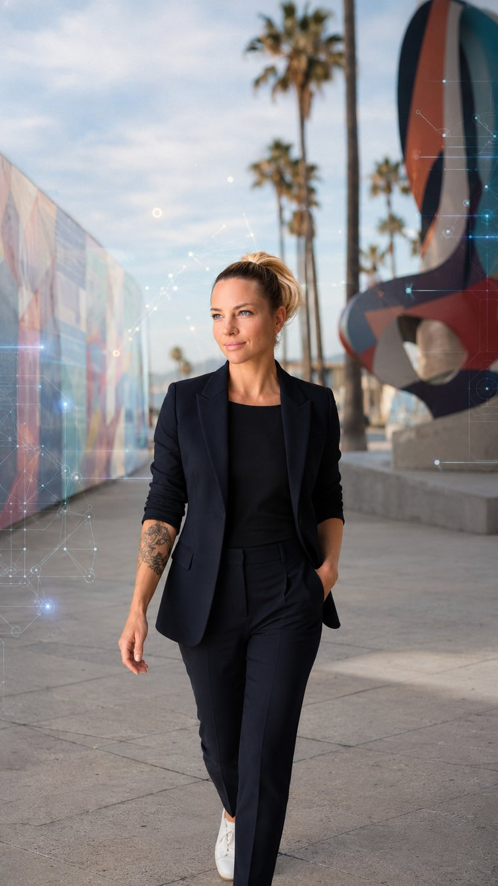

Arts Leadership
Public-facing creative programs, cultural initiatives, arts education, and local arts support.
Encinitas, California
Civic Arts & Creative Technology Leader
Arts programming leader connecting public art, community engagement, creative education, AI tools, coding, and practical digital systems.
Professional Profile
Brittney Chase is an Encinitas-based civic arts and creative technology professional with experience leading arts programming, community engagement, and creative initiatives connected to the City of Encinitas.
Her work bridges cultural programming, public service, modern digital tools, and practical systems improvement for arts organizations and community-facing teams.
Experience
Arts Department Leader / Head of Arts Department Encinitas, CA | Dates TBD
Led or supported arts department initiatives connected to public arts, cultural programming, and community-facing creative experiences.
Developed and coordinated programs designed to connect residents, artists, educators, and local organizations through accessible arts experiences.
Supported arts education, workshops, events, and public engagement programs across civic and community settings.
Applied coding knowledge, AI tools, and digital workflow thinking to bring a technology-forward mindset to arts operations.
Selected Impact Areas
Public-facing creative programs, cultural initiatives, arts education, and local arts support.
Programs and experiences that encourage participation, collaboration, and civic connection.
Coding, AI, automation concepts, and operational tools applied to creative department needs.

Capability Heat Map
A role-aligned view of strengths across civic arts leadership, public engagement, creative operations, and modern digital workflows.
Contact
Best-fit roles include Creative Technology Director, Civic Arts Program Manager, Arts & Innovation Lead, Community Arts Director, and Cultural Programs & Digital Systems Specialist.